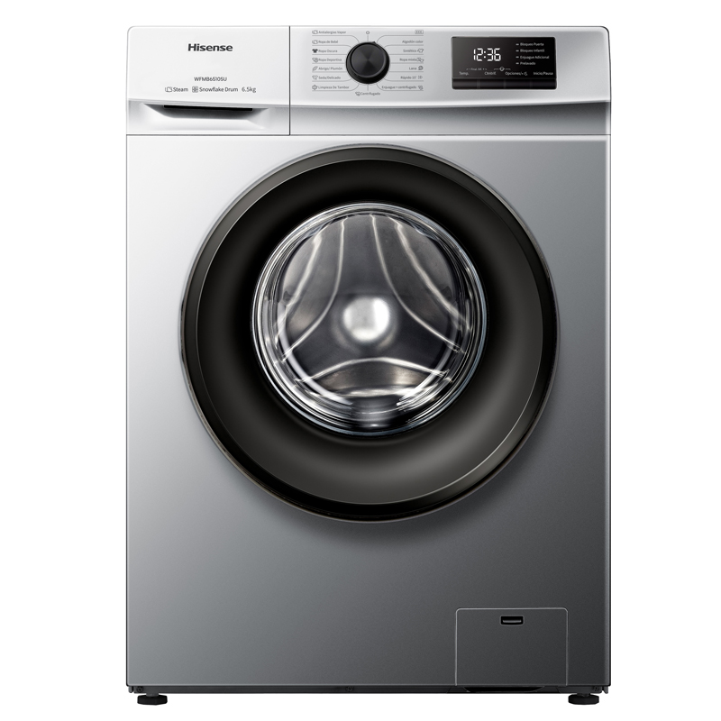
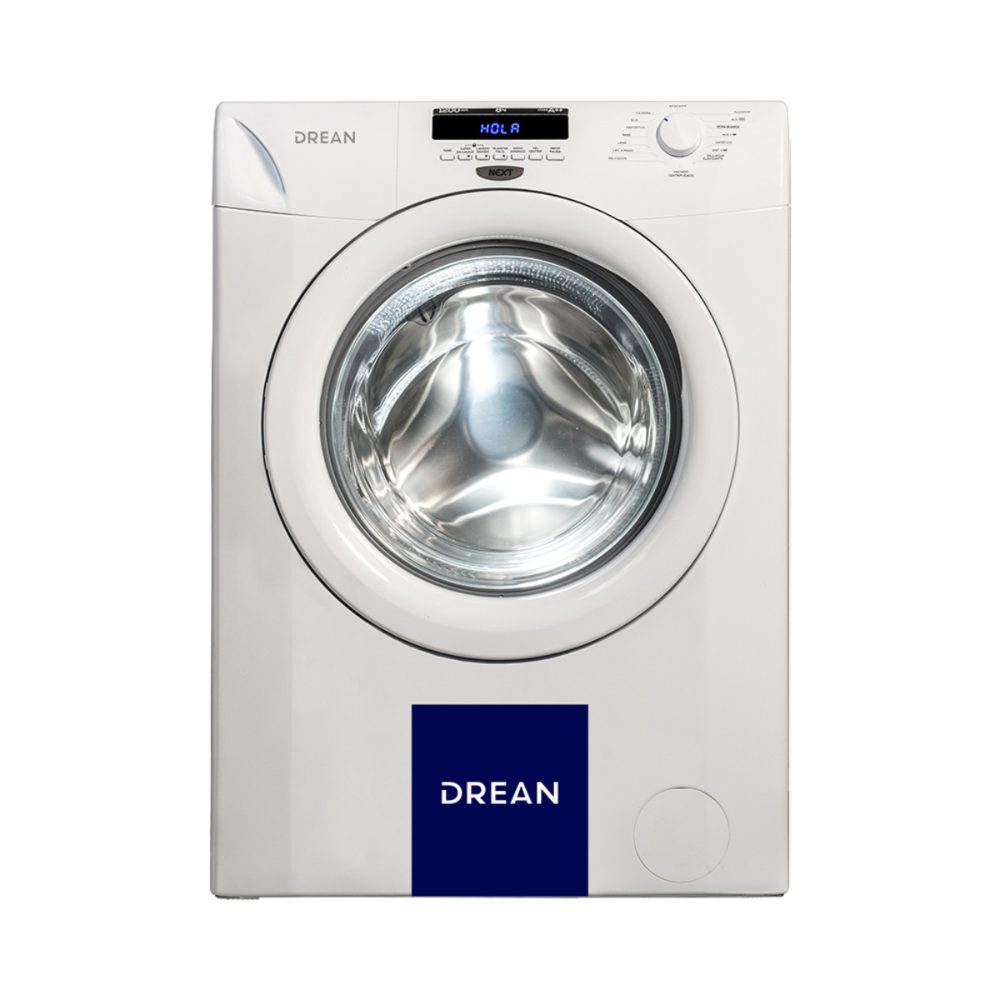
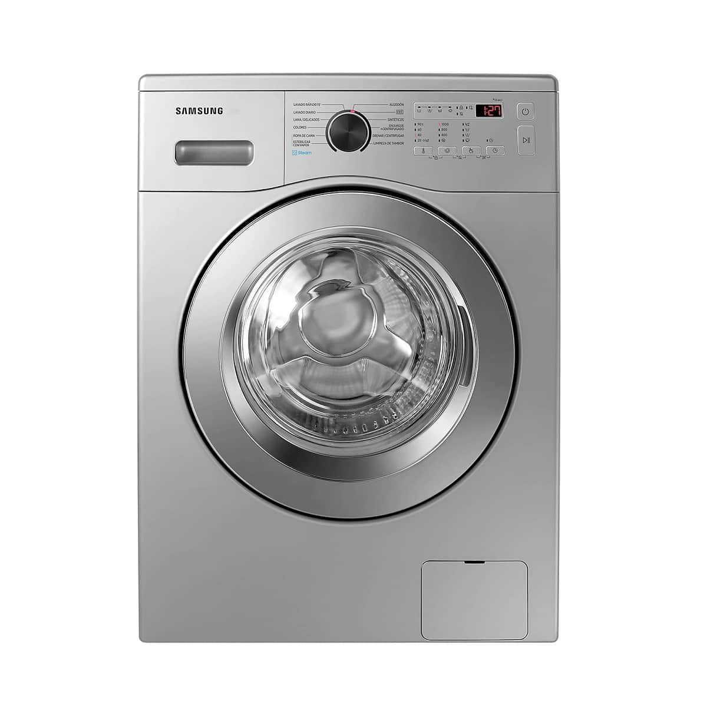
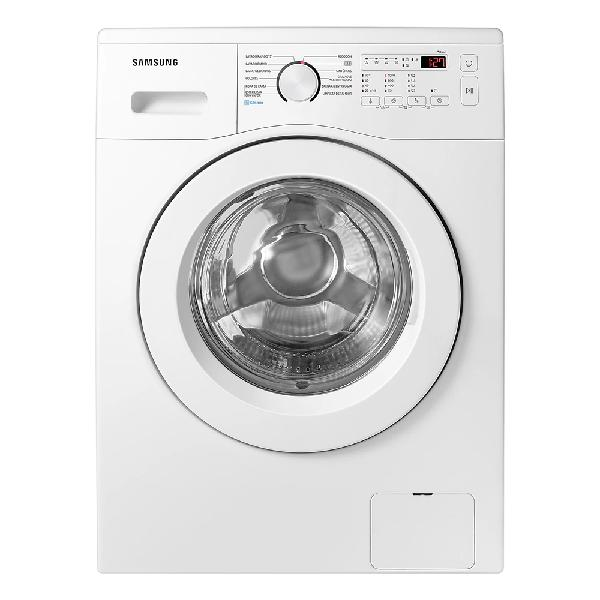
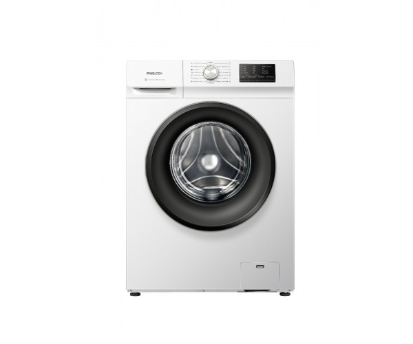

Catálogo de lavarropas
Explora nuestra selección de lavarropas: modelos variados en capacidad, eficiencia y funciones para distintos usos.

EcoWash 2000 — 7 kg, ciclo rápido y ahorro energético.

Drean Next 8.12 — 8 kg, lavado silencioso y programación diferida.

QuickSpin Plus — 6 kg, centrifugado potente, ideal para ropa deportiva.

UltraClean 900 — 9 kg, tecnología anti-manchas y ciclo con vapor.

Compact Eco — 5 kg, diseño compacto y bajo consumo.

ProCare 10 — 10 kg, lavado profesional y ciclo delicado.